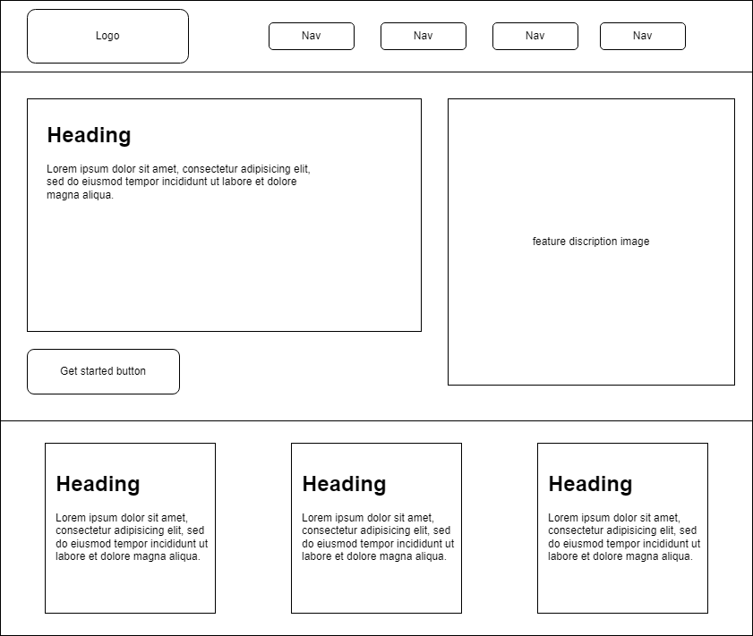
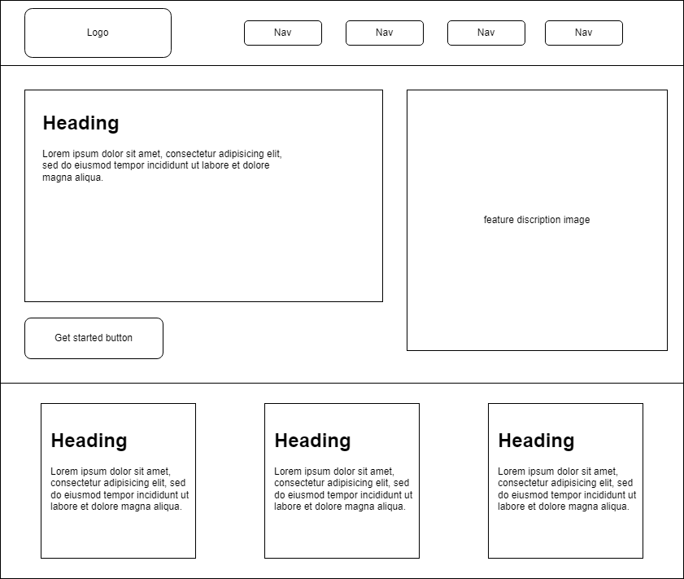

Spading JavaScript, which implies digging deep into JavaScript learning
Spade" Represents Digging & Discovery – Just like a spade is used to dig into the ground, SpadeJS symbolizes digging deep into JavaScript concepts.
Short & Memorable – It’s concise, easy to remember, and brandable.
Tech-Savvy Feel – "JS" immediately signals it’s about JavaScript, making it clear to developers.
Unique Yet Relevant – Unlike generic names like "LearnJS" or "JSPlayground," it has a distinct identity while still conveying hands-on learning.
Logo:
Site Logo Description: It integrates a spade (shovel) icon with JavaScript elements, using deep blue and vibrant yellow for a professional and creative look
Site Purpose
The purpose of this website is to provide users with an interactive learning platform focused on teaching JavaScript. It aims to provide a learning experience specifically DOM manipulation, event handling, and basic programming concepts through hands-on exercises and challenges and to bridge the gap between theory and application while making learning fun and interactive.
Scenarios
General Questions (About the Platform):
What is SpadeJS.com, and how does it work?
Is this platform suitable for beginners?
How is SpadeJS different from other JavaScript learning platforms?
Do I need any prior coding experience to start?
Is the platform free, or do I need to pay for access?
Learning & Course Structure:
What topics will I learn here? (e.g., DOM manipulation, events, functions)
How is the learning structured—are there lessons, exercises, or challenges?
Are there interactive exercises, or is it just reading material?
Do you provide real-world projects to practice JavaScript?
Can I track my progress as I learn?
How much time does it take to complete the learning path?
Hands-on & Interactive Features:
Does the platform provide a code editor for practice?
Can I see instant feedback when I write code?
Are there challenges or quizzes to test my understanding?
Can I save my code and come back later?
GSupport & Community:
What if I get stuck—do you provide hints or solutions?
Is there a forum or community where I can ask questions?
Can I get help from mentors or instructors?
Advanced & Career-Related:
Does this platform cover advanced JavaScript topics like async/await or APIs?
Can I build projects to add to my portfolio?
How does learning here help me get a job as a JavaScript developer?
Do you offer certificates or proof of completion?
Technical & Access Questions:
Can I access SpadeJS from mobile devices?
Do I need to install any software, or does everything run in the browser?
Is there a way to reset my progress and start over?
Do I need to create an account to use the platform?

.webp)
 
